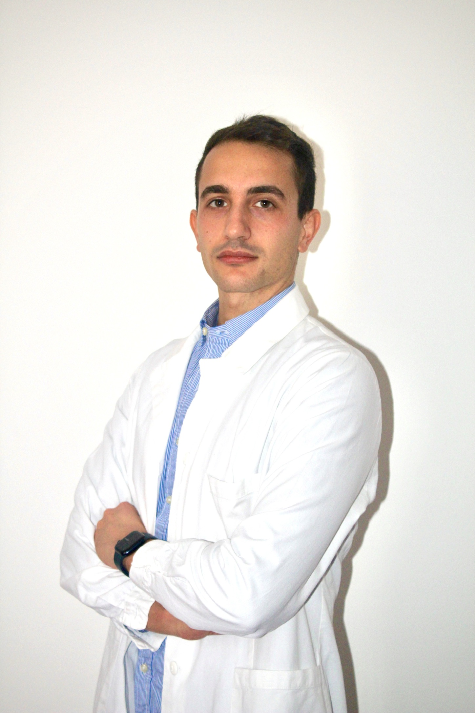

Dott. Davide Tucci
Gestione della salute oculare a 360°, con percorsi diagnostici e terapeutici personalizzati.
Ho conseguito la laurea in Medicina e Chirurgia presso l'Università degli Studi di Perugia e, successivamente, ho intrapreso il percorso di specializzazione in Oftalmologia presso l'Università Politecnica delle Marche. Durante la mia formazione, ho avuto l'onore di arricchire il mio bagaglio di esperienze anche presso il Royal Liverpool University Hospital, in Inghilterra, uno dei centri oculistici più prestigiosi a livello mondiale.
Ho sempre dato grande importanza all'aggiornamento professionale, partecipando a congressi di rilevanza nazionale e internazionale, sia da ospite che da relatore, e mi sono dedicato costantemente anche alla ricerca scientifica, essendo co-autore di diverse pubblicazioni su autorevoli riviste. Attualmente, ricopro l'incarico di Dirigente Medico presso la Clinica Oculistica dell'Azienda Ospedaliera di Perugia.
“Credo che ogni medico debba occuparsi della cura delle persone prima ancora che della cura delle malattie.”

Salute degli occhi a 360°
Recensioni
“Ho recentemente effettuato una visita oculistica dal Dott. Tucci e sono rimasta molto soddisfatta. Il dottore si è dimostrato estremamente professionale, competente e attento alle mie esigenze. Consiglio vivamente il Dott. Davide Tucci a chiunque cerchi un professionista serio e affidabile.”
“Dottore arrivato in anticipo all'orario di prenotazione, visita accurata e un'ottima spiegazione dettagliata. Molto gentile, professionale e disponibile. Mi sono trovata molto bene.”
“Ha analizzato con molta attenzione la situazione abbastanza complessa della mia vista: dopo una dettagliata anamnesi ha suggerito un percorso di cura e recupero che ho già avviato.”
“Un Dottore preciso, molto esplicativo e dettagliato nella cura del paziente. Complimenti.”
“Visita e spiegazioni molto dettagliate. Il medico ha anche accettato di visitarmi eccezionalmente, fermandosi più a lungo poiché avevo un'urgenza.”
“Consigliatissimo! Un professionista attento e scrupoloso. Tornerò sicuramente da lui per i controlli periodici!”
Leggi tutte le recensioni su MioDottore.it